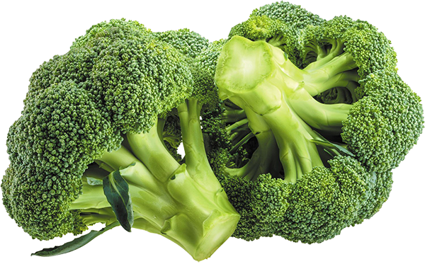
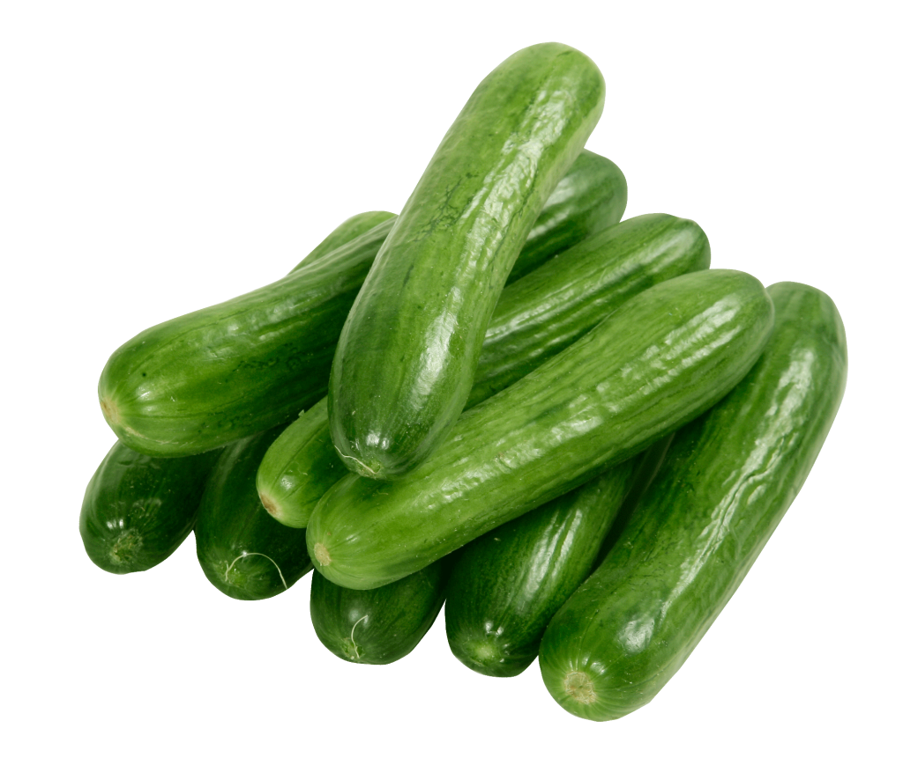

Healthy food

Broccoli
Broccoli (Brassica oleracea var. italica) is an edible green plant in the cabbage family (family Brassicaceae, genus Brassica) whose large flowering head, stalk and small associated leaves are eaten as a vegetable. Broccoli is classified in the Italica cultivar group of the species Brassica oleracea.
Tomato

Tomato plants are vines, largely annual and vulnerable to frost, though sometimes living longer in greenhouses. The flowers are able to self-fertilise. Modern varieties have been bred to ripen uniformly red, in a process that has impaired the fruit's sweetness and flavor.
Fish

Fish can be grouped into the more basal jawless fish and the more common jawed fish, the latter including all living cartilaginous and bony fish, as well as the extinct placoderms and acanthodians. In a break to the long tradition of grouping all fish into a single class (Pisces), modern phylogenetics views fish as a paraphyletic group.
Cucumber
cucumber, (Cucumis sativus), creeping plant of the gourd family (Cucurbitaceae), widely cultivated for its edible fruit. The nutritional value of the cucumber is low, but its delicate flavour makes it popular for salads and relishes. Small fruits are often pickled.
Carrot

The characteristic orange colour is from beta-carotene, making carrots a rich source of vitamin A. A myth that carrots help people to see in the dark was spread as propaganda in the Second World War, to account for the ability of British pilots to fight in the dark; the real explanation was the introduction of radar.